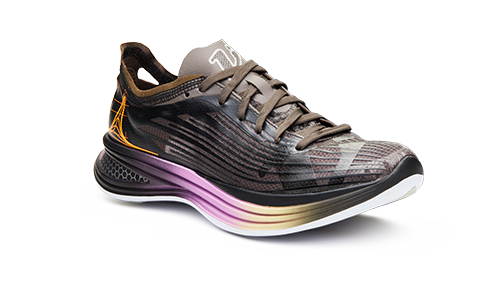
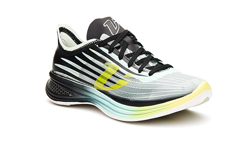
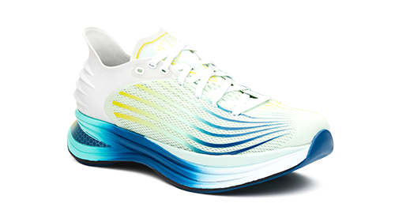
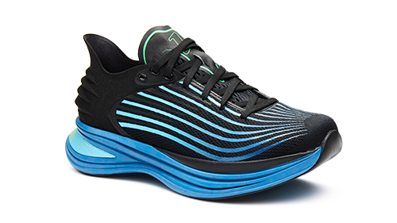
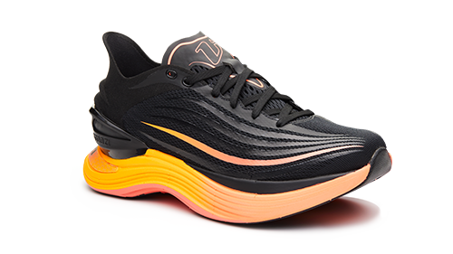
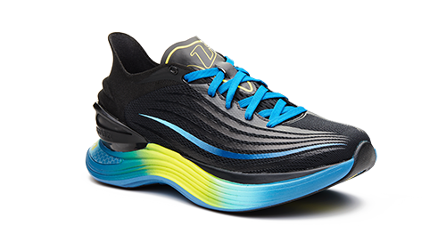
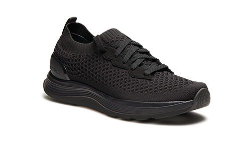
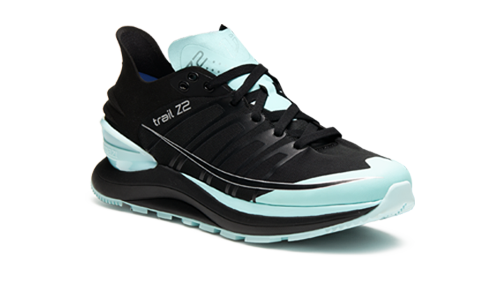
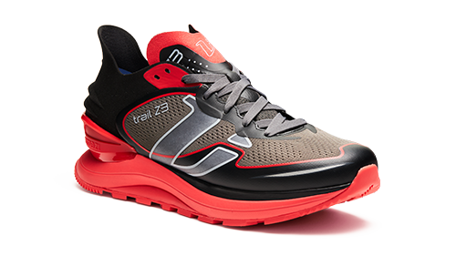

Foot & Ankle Surgery
Bunion correction, hammertoe correction, Fix My Flat Foot, scar-free toe shortening, webbed toe separation, lumps and bumps removal, corn removal surgery and Foot Botox.
Specialist foot and ankle surgery consultations, podiatry, chiropody and physiotherapy from clinics in Chingford, Wanstead and Westcliff-on-Sea.
Foot & Ankle Centre provides foot and ankle surgery consultations for patients across London and Essex. Our clinicians assess your symptoms, examine your feet and discuss whether treatment may be appropriate before recommending the next step.
Alongside surgery, patients can book podiatry, chiropody, physiotherapy, biomechanics and gait analysis, orthotics and insoles, ultrasound guided injections, shockwave therapy and routine foot care. If you are unsure which appointment to choose, call our reception team for guidance.
Our specialist team provides assessment and consultation for common foot and ankle procedures, including bunion correction, hammertoe surgery, flat-foot correction, toe shortening, webbed-toe separation, lumps and bumps removal and cosmetic foot surgery.
A consultation does not mean that surgery is required. The clinician will examine your feet, discuss your goals and explain suitable options, risks and recovery. You can request a surgery quotation by sending clear photographs, or choose a free 20-minute consultation for an in-person examination.
Bunion correction, hammertoe correction, Fix My Flat Foot, scar-free toe shortening, webbed toe separation, lumps and bumps removal, corn removal surgery and Foot Botox.
Foot pain, plantar fasciitis and ingrowing toenail removal, with assessment-led treatment and advice for everyday foot and lower-limb concerns.
Corn removal, verruca treatment, fungal nails, hard skin removal, ingrowing toenails, long nails and cushions for feet, with routine foot-care advice.
Biomechanics, diagnostic injections, gait analysis, insoles, ultrasound guided injections and X-ray facilities for movement, pain and alignment concerns.
Acupuncture, cupping therapy, dry needling, electrotherapy, exercise rehabilitation, myofascial release, shockwave therapy, sports massage and triggerpoint therapy.
Helpful updates from our clinic team on podiatry, surgery, recovery and keeping active.

Minimally invasive flat foot surgery using a sinus tarsi implant can help selected patients with painful flexible flat feet. Learn how subtalar arthroereisis works, who may be suitable and what recovery can involve.

Learn how cupping therapy may help relieve muscle tension, reduce pain and support recovery, including targeted treatment for foot and ankle issues.

Learn how neck tension causes cervicogenic headaches and how physiotherapy can help relieve pain and improve neck mobility.
Our team includes consultant podiatric surgeons Jason Hargrave and Michael Hutchby, alongside podiatrists, physiotherapists and support staff. Our long-standing relationships with local GPs, private healthcare providers, local sports clubs and charities demonstrate our commitment to improving the well-being of our community.

I had a really great experience at the Foot and Ankle Centre. The staff took excellent care of me from start to finish, making me feel comfortable and well looked after. They took the time to explain the procedure thoroughly and answered all my questions with patience and clarity. The facility itself was immaculate, creating a clean and professional environment. I highly recommend this clinic to anyone in need of foot and ankle care!
Excellent foot & ankle medical centre. Very welcoming, lovely environment and high professional customer service from beginning to end. Surgeon and his team were absolutely brilliant. Highly recommended...thank you. Linda
Cannot recommend Mr Olivelle highly enough. We have been to the clinic several times over the last year for my daughters ingrowing toenails...he is helpful, kind, professional and always put my daughter at ease. A really nice man. Big shout out for the reception staff too who were always really helpful and great at communicating
My family and I have been clients of Ms Gupta for over 5 years. She does magic tidying up my neglected feet and has been brilliant treating my children's various veruccas. Always a friendly welcome from the helpful reception staff. I wouldn't hesitate to recommend the clinic.
I found the staff very kind and helpful. The practitioners were also very helpful and thorough. Ms Gupta referred me to Mr Olivelle for an ultrasound evaluation and I now know what is causing the pain in my feet, I can get the appropriate treatment. I can recommend this clinic unreservedly
Very pleased with the service today my anesthetist was absolutely amazing throughout. I have just had surgery and I was put at ease throughout the entire procedure. The surgeon was very confident, and it seemed effortless, and the receptionist was amazing and made sure I was comfortable and even walked me out to my Uber and stayed with me until I was inside the car. I am very impressed with the service I received today.
We are proud to stock the full Vimazi range in clinic so you can test pace-tuned running shoes with guidance from our podiatry team.









Every model is engineered for a specific running pace zone, balancing cushioning and rebound where you need it most.
Our clinicians assess your gait and foot type in person to match you with the Vimazi shoe that unlocks confident miles.
Access the latest colourways and limited releases, with advice on pairing custom orthotics or shockwave therapy plans.
Call our friendly reception team or use the form to request an appointment. We respond within one business day.
Embed your map here
Google Maps or OpenStreetMap iframe